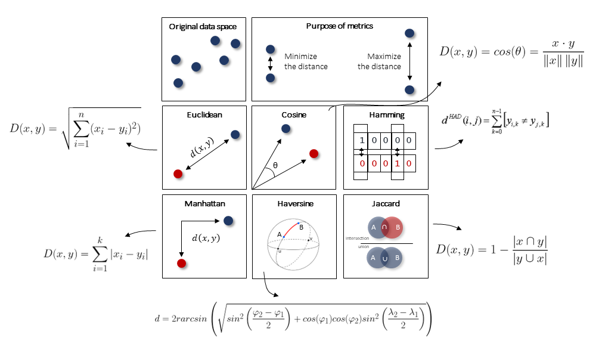
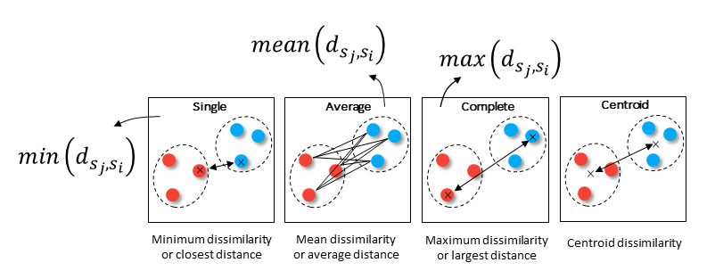

How to choose the cluster evaluation method?
With unsupervised clustering, we aim to determine “natural” or “data-driven” groups in the data without using apriori knowledge about labels or categories. The challenge of using different unsupervised clustering methods is that it will result in different partitioning of the samples and thus different groupings since each method implicitly impose a structure on the data.
Note that there is no golden rule to define the optimal number of clusters. It requires investigation, and backtesting.
The implemented cluster evaluation methods works pretty well in certain scenarios but it requires to understand the mathematical properties of the used method so that it matches with the statistical properties of the data. Decide which distance metric fits best to your data and aim. As an example, DBscan in combination with the Silhouette evaluation can detect clusters with different densities and shapes while k-means assumes that clusters are convex shaped.
Distance Metric
What is a “good” clustering? Intuitively we may describe it as a group of samples (aka the images) that are cluttered together. However, it is better to describe clusters with the distances between the samples. The most well-known distance metric is the Euclidean distance. Although it is set as the default metric in many methods, it is not always the best choice. A schematic overview of various distance metrics is depicted in the underneath Figure.
 |
Linkage types
The process of hierarchical clustering involves an approach of grouping samples into a larger cluster. In this process, the distances between two sub-clusters need to be computed for which the different types of linkages describe how the clusters are connected.
 |
Briefly, Single linkage between two clusters is the proximity between their two closest samples. It produces a long chain and is therefore ideal to cluster spherical data but also for outlier detection. Complete linkage between two clusters is the proximity between their two most distant samples. Intuitively, the two most distant samples cannot be much more dissimilar than other quite dissimilar pairs. It forces clusters to be spherical and have often “compact” contours by their borders, but they are not necessarily compact inside. Average linkage between two clusters is the arithmetic mean of all the proximities between the objects of one, on one side, and the objects of the other, on the other side. Centroid linkage is the proximity between the geometric centroids of the clusters. Choose the metric and linkage type carefully because it directly affects the final clustering results. With this in mind, we can start preprocessing the images.
Derivative method
The derivative” method is build on fcluster() from scipy. For evaluation, this method compares each cluster merge’s height h to the average avg and normalizing it by the standard deviation std formed over the depth previous levels. Finally, the derivative” method returns the cluster labels for the optimal cutt-off based on the choosen hierarchical clustering method.
Let’s demonstrate this using the previously randomly generated samples.
# Intialize model
ce = clusteval(cluster='agglomerative', evaluate='derivative')
# Cluster evaluation
results = ce.fit(X)
# The clustering label can be found in:
print(results['labx'])
# Make plots
ce.plot()
ce.scatter(X)
Silhouette method
The silhouette value is a measure of how similar a sample is to its own cluster (cohesion) compared to other clusters (separation). The scores ranges between [−1, 1], where a high value indicates that the object is well matched to its own cluster and poorly matched to neighboring clusters. Thus higher scores are better. In contrast to the DBindex, the Silhouette score is a sample-wise measure, i.e., measures the average similarity of the samples within a cluster and their distance to the other objects in the other clusters. The silhouette score can be used in combination with any distance metric.
The silhouette approach is thus a sample-wise approach, which means that for each sample, a silhouette score is computed and if most samples have a high value, then the clustering configuration is appropriate. If many points have a low or negative value, then the clustering configuration may have too many or too few clusters. The silhouette can be calculated with any distance metric, such as the Euclidean distance or the Manhattan distance.
# Intialize model
ce = clusteval(cluster='agglomerative', evaluate='silhouette')
# Cluster evaluation
results = ce.fit(X)
# The clustering label can be found in:
print(results['labx'])
# Make plots
ce.plot()
ce.scatter(X)
DBindex method
Davies–Bouldin index (dbindex): Intuitively it can be described as a measure of the within-cluster distances, and between cluster distances. The score is bounded between [0, 1], lower is better. Note that, since it measures the distance between clusters centroids it is restricted to using the Euclidean distances. The lower the value, the tighter the clusters and the seperation between clusters.
|
|


# Intialize model
ce = clusteval(cluster='agglomerative', evaluate='dbindex')
# Cluster evaluation
results = ce.fit(X)
# The clustering label can be found in:
print(results['labx'])
# Make plots
ce.plot()
ce.scatter(X)
ce.dendrogram()
DBSCAN
Density-Based Spatial Clustering of Applications with Noise is an clustering approach that finds core samples of high density and expands clusters from them. This works especially good when having samples which contains clusters of similar density.
# Intialize model
ce = clusteval(cluster='dbscan')
# Parameters can be changed for dbscan:
# ce = clusteval(cluster='dbscan', params_dbscan={'epsres' :100, 'norm':True})
# Cluster evaluation
results = ce.fit(X)
# The clustering label can be found in:
print(results['labx'])
# Make plots
ce.plot()
ce.scatter(X)
HDBSCAN
Let’s evaluate the results using hdbscan.
pip install hdbscan
# Determine the optimal number of clusters
ce = clusteval(cluster='hdbscan')
# Make plots
ce.plot()
ce.scatter(X)